용접기능사 (2014-04-06 기출문제)
1과목: 용접일반
1. 다음 [보기]와 같은 용착법은?
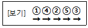
- 대칭법
- 전진법
- 후진법
- 스킵법
(정답률: 87%)

2. 가연성가스로 스파크 등에 의한 화재에 대하여 가장 주의해야 할 가스는?
- C3H8
- CO2
- He
- O2
(정답률: 73%)
3. 서브머지드 아크 용접기에서 다전극 방식에 의한 분류에 속하지 않는 것은?
- 푸시 풀식
- 텐덤식
- 횡병렬식
- 횡직렬식
(정답률: 77%)
4. 용접기의 구비조건에 해당되는 사항으로 옳은 것은?
- 사용 중 용접기 온도 상승이 커야 한다.
- 용접 중 단락되었을 경우 대전류가 흘러야 된다.
- 소비전력이 큰 역률이 좋은 용접기를 구비한다.
- 무부하 전압을 최소로하여 전격기의 위험을 줄인다.
(정답률: 79%)
5. CO2 가스 아크 용접장치 중 용접전원에서 박판 아크 전압을 구하는 식은? (단, I는 용접 전류의 값이다.)
- V = 0.04 ×I ＋ 15.5±1.5
- V = 0.004 ×I ＋ 155.5±11.5
- V = 0.⑤ ×I ＋ 111.5±2
- V = 0.0⑤ ×I ＋ 1111.5±2
(정답률: 71%)
6. 이산화탄소의 특징이 아닌 것은?(오류 신고가 접수된 문제입니다. 반드시 정답과 해설을 확인하시기 바랍니다.)
- 색, 냄새가 없다.
- 공기보다 가볍다.
- 상온에서도 쉽게 액화한다.
- 대지 중에서 기체로 존재한다.
(정답률: 71%)
7. 용접 전류가 낮거나, 운봉 및 유지 각도가 불량할 때 발생하는 용접 결함은?
- 용락
- 언더컷
- 오버랩
- 선상조직
(정답률: 62%)
8. CO2 가스 아크 용접에서 일반적으로 용접전류를 높게 할 때의 사항을 열거한 것 중 옳은 것은?
- 용접입열이 작아진다.
- 와이어의 녹아내림이 빨라진다.
- 용착율과 용입이 감소한다.
- 우수한 비드 형상을 얻을 수 있다.
(정답률: 77%)
9. 용접부의 검사법 중 기계적 시험이 아닌 것은?
- 인장시험
- 부식시험
- 굽힘시험
- 피로시험
(정답률: 81%)
10. 주성분이 은, 구리, 아연의 합금인 경납으로 인장강도, 전연성 등의 성질이 우수하여 구리, 구리합금, 철강, 스테인리스강 등에 사용되는 납재는?
- 양은납
- 알루미늄납
- 은납
- 내열납
(정답률: 67%)
11. 용접 이음을 설계할 때 주의 사항으로 틀린 것은?
- 구조상의 노치부를 피한다.
- 용접 구조물의 특성 문제를 고려한다.
- 맞대기 용접보다 필릿 용접을 많이 하도록 한다.
- 용접성을 고려한 사용 재료의 선정 및 열 영향 문제를 고려한다.
(정답률: 84%)
12. 불활성 아크 용접에 관한 설명으로 틀린 것은?
- 아크가 안정되어 스패터가 적다.
- 피복제나 용제가 필요하다.
- 열 집중성이 좋아 능률적이다.
- 철 및 비철 금속의 용접이 가능하다.
(정답률: 58%)
13. 용접 후 인장 또는 굴곡시험으로 파단 시켰을 때 은점을 발견할 수 있는데 이 은점을 없애는 방법은?
- 수소 함유량이 많은 용접봉을 사용한다.
- 용접 후 실온으로 수개월 간 방치한다.
- 용접부를 염산으로 세척한다.
- 용접부를 망치로 두드린다.
(정답률: 62%)
14. 가스 중에서 최소의 밀도로 가장 가볍고 확산속도가 빠르며, 열전도가 가장 큰 가스는?
- 수소
- 메탄
- 프로판
- 부탄
(정답률: 82%)
15. 초음파 탐상법에서 널리 사용되며 초음파의 펄스를 시험체의 한쪽 면으로부터 송신하여 결함에코의 형태로 결함을 판정하는 방법은?
- 투과법
- 공진법
- 침투법
- 펄스 반사법
(정답률: 76%)
16. 전기 저항 점용접 작업 시 용접기에서 조정할 수 있는 3대 요소에 해당하지 않는 것은?
- 용접 전류
- 전극 가압력
- 용접 전압
- 통전 시간
(정답률: 56%)
17. 다음 중 비용극식 불활성 가스 아크 용접은?
- GMAW
- GTAW
- MMAW
- SMAW
(정답률: 66%)
18. 알루미늄 분말과 산화철 분말을 1:3의 비율로 혼합하고, 점화제로 점화하면 일어나는 화학반응은?
- 테르밋반응
- 용융반응
- 포정반응
- 공석반응
(정답률: 79%)
19. 불활성가스 금속 아크 용접에서 가스 공급계통의 확인 순서로 가장 적합한 것은?
- 용기→감압밸브→유량계→제어장치→용접토치
- 용기→유량계→감압밸브→제어장치→용접토치
- 감압밸브→용기→유량계→제어장치→용접토치
- 용기→제어장치→감압밸브→유량계→용접토치
(정답률: 69%)
20. 용접을 크게 분류할 때 압접에 해당 되지 않는 것은?
- 저항용접
- 초음파용접
- 마찰용접
- 전자빔용접
(정답률: 57%)
21. 용접 현장에서 지켜야 할 안전 사항 중 잘못 설명한 것은?
- 탱크 내에서는 혼자 작업한다.
- 인화성 물체 부근에서는 작업을 하지 않는다.
- 좁은 장소에서의 작업 시는 통풍을 실시한다.
- 부득이 가연성 물체 가까이서 작업 시는 화재발생 예방조치를 한다.
(정답률: 87%)
22. 용접 시 냉각속도에 관한 설명 중 틀린 것은?
- 예열을 하면 냉각속도가 완만하게 된다.
- 얇은 판보다는 두꺼운 판이 냉각속도가 크다.
- 알루미늄이나 구리는 연강보다 냉각속도가 느리다.
- 맞대기 이음보다는 T형 이음이 냉각속도가 크다.
(정답률: 46%)
23. 수소함유량이 타 용접봉에 비해서 1/10정도 현저하게 적고 특히 균열의 감소성이나 탄소, 황의 함유량이 많은 강의 용접에 적합한 용접봉은?
- E4301
- E4313
- E4316
- E4324
(정답률: 71%)
24. 다음 중 아크에어 가우징에 사용되지 않는 것은?
- 가우징 토치
- 가우징봉
- 압축공기
- 열교환기
(정답률: 78%)
25. 다음 중 주철 용접 시 주의사항으로 틀린 것은?
- 용접봉은 가능한 한 지름이 굵은 용접봉을 사용한다.
- 보수 용접을 행하는 경우는 결함부분을 완전히 제거한 후 용접한다.
- 균열의 보수는 균열의 성장을 방지하기 위해 균열의 양 끝에 정지 구멍을 뚫는다.
- 용접 전류는 필요 이상 높이지 말고 직선비드를 배치하며, 지나치게 용입을 깊게 하지 않는다.
(정답률: 73%)
26. 가스용접용 토치의 팁 중 표준불꽃으로 1시간 용접 시 아세틸렌 소모량이 100L인 것은?
- 고압식 200번 팁
- 중압식 200번 팁
- 가변압식 100번 팁
- 불변압식 100번 팁
(정답률: 76%)
27. 고체 상태에 있는 두 개의 금속 재료를 융접, 압접, 납땜으로 분류하여 접합하는 방법은?
- 기계적인 접합법
- 화학적 접합법
- 전기적 접합법
- 야금적 접합법
(정답률: 78%)
28. 헬멧이나 핸드실드의 차광유리 앞에 보호유리를 끼우는 가장 타당한 이유는?
- 시력을 보호하기 위하여
- 가시광선을 차단하기 위하여
- 적외선을 차단하기 위하여
- 차광유리를 보호하기 위하여
(정답률: 80%)
29. 직류 아크용접기의 음(-)극에 용접봉을, 양(＋)극에 모재를 연결한 상태의 극성을 무엇이라 하는가?
- 직류정극성
- 직류역극성
- 직류음극성
- 직류용극성
(정답률: 72%)
30. 수동 가스절단 작업 중 절단면의 윗 모서리가 녹아 둥글게 되는 현상이 생기는 원인과 거리가 먼 것은?
- 팁과 강판사이의 거리가 가까울 때
- 절단가스의 순도가 높을 때
- 예열불꽃이 너무 강할 때
- 절단속도가 너무 느릴 때
(정답률: 53%)
31. 교류아크 용접기의 종류 중 조작이 간단하고 원격 조정이 가능한 용접기는?
- 가포화 리액터형 용접기
- 가동 코일형 용접기
- 가동 철심형 용접기
- 탭 전환형 용접기
(정답률: 75%)
32. 가연성 가스에 대한 설명 중 가장 옳은 것은?
- 가연성 가스는 CO2와 혼합하면 더욱 잘 탄다.
- 가연성 가스는 혼합 공기가 적은 만큼 완전 연소한다.
- 산소, 공기 등과 같이 스스로 연소하는 가스를 말한다.
- 가연성 가스는 혼합한 공기와의 비율이 적절한 범위 안에서 잘 연소한다.
(정답률: 64%)
33. 수중 절단 작업을 할 때에는 예열 가스의 양을 공기 중의 몇 배로 하는가?
- 0.5~1배
- 1.5~2배
- 4~8배
- 9~16배
(정답률: 60%)
34. 아크 용접기의 구비조건으로 틀린 것은?
- 구조 및 취급이 간단해야 한다.
- 사용 중에 온도 상승이 커야 한다.
- 전류 조정이 용이하고, 일정한 전류가 흘러야 한다.
- 아크 발생 및 유지가 용이하고 아크가 안정 되어야 한다.
(정답률: 86%)
35. 철강을 가스절단 하려고 할 때 절단조건으로 틀린 것은?
- 슬래그의 이탈이 양호하여야 한다.
- 모재에 연소되지 않은 물질이 적어야 한다.
- 생성된 산화물의 유동성이 좋아야 한다.
- 생성된 금속 산화물의 용융온도는 모재의 용융점보다 높아야 한다.
(정답률: 64%)
2과목: 용접재료
36. 아크용접에서 피복제의 역할이 아닌 것은?
- 전기 절연작용을 한다.
- 용착금속의 응고와 냉각속도를 빠르게 한다.
- 용착금속에 적당한 합금원소를 첨가한다.
- 용적(globule)을 미세화하고, 용착효율을 높인다.
(정답률: 70%)
37. 직류용접에서 발생되는 아크 쏠림의 방지 대책 중 틀린 것은?
- 큰 가접부 또는 이미 용접이 끝난 용착부를 향하여 용접할 것
- 용접부가 긴 경우 후퇴 용접법(back step welding)으로 할 것
- 용접봉 끝을 아크가 쏠리는 방향으로 기울일 것
- 되도록 아크를 짧게 하여 사용할 것
(정답률: 73%)
38. 산소-아세틸렌가스 불꽃 중 일반적인 가스용접에는 사용하지 않고구리, 황동 등의 용접에 주로 이용되는 불꽃은?
- 탄화 불꽃
- 중성 불꽃
- 산화 불꽃
- 아세틸렌 불꽃
(정답률: 52%)
39. 두 개의 모재를 강하게 맞대어 놓고 서로 상대 운동을 주어 발생되는 열을 이용하는 방식은?
- 마찰 용접
- 냉간 압접
- 가스 압접
- 초음파 용접
(정답률: 88%)
40. 18-8형 스테인리스강의 특징을 설명한 것 중 틀린 것은?
- 비자성체이다.
- 18-8에서 18은 Cr%, 8은 Ni%이다.
- 결정구조는 면심입방격자를 갖는다.
- 500~800℃로 가열하면 탄화물이 입계에 석출하지 않는다.
(정답률: 54%)
41. 용접금속의 용융부에서 응고 과정의 순서로 옳은 것은?
- 결정핵 생성 → 결정경계 → 수지상정
- 결정핵 생성 → 수지상정 → 결정경계
- 수지상정 → 결정핵 생성 → 결정경계
- 수지상정 → 결정경계 → 결정핵 생성
(정답률: 52%)
42. 질량의 대소에 따라 담금질 효과가 다른 현상을 질량효과라고 한다. 탄소강에 니켈, 크롬, 망간 등을 첨가하면 질량효과는 어떻게 변하는가?
- 질량효과가 커진다.
- 질량효과가 작아진다.
- 질량효과는 변하지 않는다.
- 질량효과가 작아지다가 커진다.
(정답률: 53%)
43. Mg(마그네슘)의 융점은 약 몇 ℃인가?
- 650℃
- 1538℃
- 1670℃
- 3600℃
(정답률: 61%)
44. 주철에 관한 설명으로 틀린 것은?
- 인장강도가 압축강도보다 크다.
- 주철은 백주철, 반주철, 회주철 등으로 나눈다.
- 주철은 메짐(취성)이 연강보다 크다.
- 흑연은 인장강도를 약하게 한다.
(정답률: 40%)
45. 강재 부품에 내마모성이 좋은 금속을 용착시켜 경질의 표면층을 얻는 방법은?
- 브레이징(brazing)
- 숏 피닝(shot peening)
- 하드 페이싱(hard facing)
- 질화법(nitriding)
(정답률: 67%)
46. 용해 시 흡수한 산소를 인(P)으로 탈산하여 산소를 0.01% 이하로 한 것이며, 고온에서 수소 취성이 없고 용접성이 좋아 가스관, 열교환관 등으로 사용되는 구리는?
- 탈산구리
- 정련구리
- 전기구리
- 무산소구리
(정답률: 68%)
47. 저합금강 중에서 연강에 비하여 고장력강의 사용 목적으로 틀린 것은?
- 재료가 절약된다.
- 구조물이 무거워진다.
- 용접공수가 절감된다.
- 내식성이 향상된다.
(정답률: 66%)
48. 다음 중 주조상태의 주강품 조직이 거칠고 취약하기 때문에 반드시 실시해야 하는 열처리는?
- 침탄
- 풀림
- 질화
- 금속침투
(정답률: 66%)
49. 합금강이 탄소강에 비하여 좋은 성질이 아닌 것은?
- 기계적 성질 향상
- 결정입자의 조대화
- 내식성, 내마멸성 향상
- 고온에서 기계적 성질 저하방지
(정답률: 57%)
50. 산소나 탈산제를 품지 않으며, 유리에 대한 봉착성이 좋고 수소취성이 없는 시판동은?
- 무산소동
- 전기동
- 전련동
- 탈산동
(정답률: 58%)
3과목: 기계제도
51. 도면에 "ks b 1101 둥근 머리 리벳 25 × 36 SWRM 10" 와 같이 리벳이 표시되었을 경우 올바른 설명은?
- 호칭 지름은 25㎜이다.
- 리벳이음의 피치는400㎜이다.
- 리벳의 재직은 황동이다.
- 둥근머리부의 바깥지름은 36㎜이다.
(정답률: 56%)
52. 기계제도 도면에서 “t120”이라는 치수가 있을 경우 “t”가 의미하는 것은?
- 모떼기
- 재료의 두께
- 구의 지름
- 정사각형의 변
(정답률: 83%)
53. 도면에서의 지시한 용접법으로 바르게 짝지어진 것은?
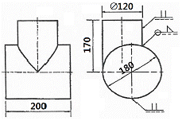
- 이면 용접, 필릿 용접
- 겹치기 용접, 플러그 용접
- 평형 맞대기 용접, 필릿 용접
- 심 용접, 겹치기 용접
(정답률: 64%)
54. 그림은 배관용 밸브의 도시 기호이다. 어떤 밸브의 도시 기호인가?
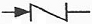
- 앵글 밸브
- 체크 밸브
- 게이트 밸브
- 안전 밸브
(정답률: 77%)
55. 배관용 아크 용접 탄소강 강관의 KS 기호는?
- PW
- WM
- SCW
- SPW
(정답률: 62%)
56. 기계 제작 부품 도면에서 도면의 윤곽선 오른쪽 아래 구석에 위치하는 표제란을 가장 올바르게 설명한 것은?
- 품번, 품명, 재질, 주서 등을 기재한다.
- 제작에 필요한 기술적인 사항을 기재한다.
- 제조 공정별 처리방법, 사용공구 등을 기재한다.
- 도번, 도명, 제도 및 검도 등 관련자 서명, 척도 등을 기재한다.
(정답률: 71%)
57. 그림과 같이 제3각법으로 정면도와 우측면도를 작도할 때 누락된 평면도로 적합한 것은?
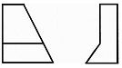
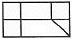
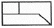
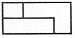
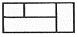
(정답률: 65%)
58. 그림과 같은 원추를 전개하였을 경우 전개면의 꼭지각이 180°가 되려면 øD의 치수는 얼마가 되어야 하는가?
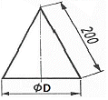
- ø100
- ø120
- ø180
- ø200
(정답률: 57%)
59. 단면을 나타내는 해칭선의 방향이 가장 적합하지 않은 것은?
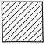
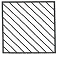
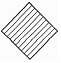
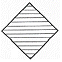
(정답률: 67%)
60. 기계제도에서 사용하는 선의 굵기 기준이 아닌 것은?
- 0.9㎜
- 0.25㎜
- 0.18㎜
- 0.7㎜
(정답률: 56%)